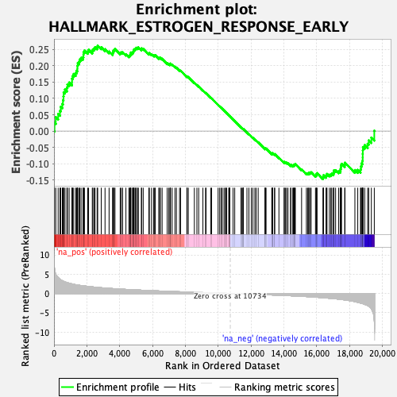
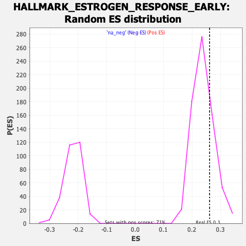

| | | Dataset | PFS |
| Phenotype | NoPhenotypeAvailable |
| Upregulated in class | na_pos |
| GeneSet | HALLMARK_ESTROGEN_RESPONSE_EARLY |
| Enrichment Score (ES) | 0.2616516 |
| Normalized Enrichment Score (NES) | 1.091979 |
| Nominal p-value | 0.2407932 |
| FDR q-value | 0.5802907 |
| FWER p-Value | 1.0 |
Table: GSEA Results Summary

Fig 1: Enrichment plot: HALLMARK_ESTROGEN_RESPONSE_EARLY
Profile of the Running ES Score & Positions of GeneSet Members on the Rank Ordered List
| SYMBOL | RANK IN GENE LIST | RANK METRIC SCORE | RUNNING ES | CORE ENRICHMENT | | 1 | CD44 | 33 | 6.548 | 0.0255 | Yes |
| 2 | TSKU | 107 | 5.058 | 0.0428 | Yes |
| 3 | TMEM164 | 254 | 4.120 | 0.0524 | Yes |
| 4 | PDZK1 | 365 | 3.702 | 0.0621 | Yes |
| 5 | WFS1 | 411 | 3.531 | 0.0745 | Yes |
| 6 | RHOD | 508 | 3.301 | 0.0832 | Yes |
| 7 | CISH | 549 | 3.204 | 0.0945 | Yes |
| 8 | ABAT | 576 | 3.152 | 0.1063 | Yes |
| 9 | MED13L | 587 | 3.138 | 0.1188 | Yes |
| 10 | PAPSS2 | 669 | 3.005 | 0.1271 | Yes |
| 11 | AKAP1 | 786 | 2.832 | 0.1329 | Yes |
| 12 | OLFML3 | 819 | 2.789 | 0.1428 | Yes |
| 13 | PODXL | 922 | 2.668 | 0.1487 | Yes |
| 14 | CHPT1 | 1096 | 2.472 | 0.1500 | Yes |
| 15 | ADCY9 | 1097 | 2.472 | 0.1603 | Yes |
| 16 | GAB2 | 1134 | 2.434 | 0.1685 | Yes |
| 17 | AR | 1201 | 2.367 | 0.1750 | Yes |
| 18 | HR | 1324 | 2.269 | 0.1781 | Yes |
| 19 | MREG | 1372 | 2.233 | 0.1850 | Yes |
| 20 | NBL1 | 1425 | 2.189 | 0.1914 | Yes |
| 21 | AMFR | 1426 | 2.189 | 0.2005 | Yes |
| 22 | SLC19A2 | 1449 | 2.176 | 0.2084 | Yes |
| 23 | SVIL | 1534 | 2.126 | 0.2129 | Yes |
| 24 | PGR | 1574 | 2.099 | 0.2196 | Yes |
| 25 | ADCY1 | 1652 | 2.056 | 0.2242 | Yes |
| 26 | SEC14L2 | 1768 | 1.988 | 0.2265 | Yes |
| 27 | KRT18 | 1792 | 1.978 | 0.2336 | Yes |
| 28 | NRIP1 | 1797 | 1.976 | 0.2416 | Yes |
| 29 | RAB31 | 1857 | 1.941 | 0.2466 | Yes |
| 30 | ELOVL2 | 2055 | 1.832 | 0.2440 | Yes |
| 31 | PRSS23 | 2106 | 1.807 | 0.2490 | Yes |
| 32 | MAST4 | 2332 | 1.714 | 0.2445 | Yes |
| 33 | SYBU | 2363 | 1.700 | 0.2500 | Yes |
| 34 | TJP3 | 2437 | 1.665 | 0.2531 | Yes |
| 35 | OPN3 | 2499 | 1.636 | 0.2568 | Yes |
| 36 | RET | 2627 | 1.587 | 0.2568 | Yes |
| 37 | CA12 | 2661 | 1.574 | 0.2617 | Yes |
| 38 | FKBP5 | 2878 | 1.487 | 0.2567 | No |
| 39 | TIAM1 | 3108 | 1.409 | 0.2507 | No |
| 40 | TGM2 | 3355 | 1.334 | 0.2435 | No |
| 41 | LAD1 | 3569 | 1.269 | 0.2378 | No |
| 42 | IGFBP4 | 3592 | 1.263 | 0.2419 | No |
| 43 | SLC7A5 | 3617 | 1.255 | 0.2459 | No |
| 44 | ADD3 | 3669 | 1.240 | 0.2484 | No |
| 45 | TIPARP | 3713 | 1.224 | 0.2512 | No |
| 46 | HSPB8 | 4031 | 1.140 | 0.2396 | No |
| 47 | SH3BP5 | 4094 | 1.124 | 0.2411 | No |
| 48 | PMAIP1 | 4178 | 1.101 | 0.2413 | No |
| 49 | JAK2 | 4380 | 1.055 | 0.2353 | No |
| 50 | INPP5F | 4561 | 1.008 | 0.2302 | No |
| 51 | LRIG1 | 4612 | 0.995 | 0.2318 | No |
| 52 | CALCR | 4648 | 0.989 | 0.2341 | No |
| 53 | MYOF | 4672 | 0.986 | 0.2370 | No |
| 54 | PDLIM3 | 4682 | 0.984 | 0.2406 | No |
| 55 | NCOR2 | 4781 | 0.959 | 0.2395 | No |
| 56 | ISG20L2 | 4814 | 0.953 | 0.2418 | No |
| 57 | GREB1 | 4837 | 0.948 | 0.2447 | No |
| 58 | FHL2 | 4852 | 0.944 | 0.2479 | No |
| 59 | RHOBTB3 | 4879 | 0.941 | 0.2504 | No |
| 60 | ELF1 | 4943 | 0.928 | 0.2510 | No |
| 61 | CXCL12 | 4987 | 0.921 | 0.2526 | No |
| 62 | ESRP2 | 5014 | 0.915 | 0.2551 | No |
| 63 | GLA | 5101 | 0.899 | 0.2544 | No |
| 64 | B4GALT1 | 5134 | 0.892 | 0.2564 | No |
| 65 | DLC1 | 5323 | 0.852 | 0.2503 | No |
| 66 | SNX24 | 5333 | 0.849 | 0.2533 | No |
| 67 | KLK10 | 5432 | 0.829 | 0.2517 | No |
| 68 | GFRA1 | 5778 | 0.765 | 0.2370 | No |
| 69 | FCMR | 5805 | 0.760 | 0.2389 | No |
| 70 | TGIF2 | 5938 | 0.737 | 0.2351 | No |
| 71 | MYBL1 | 6063 | 0.711 | 0.2316 | No |
| 72 | SLC22A5 | 6126 | 0.699 | 0.2313 | No |
| 73 | BAG1 | 6169 | 0.690 | 0.2320 | No |
| 74 | KRT19 | 6382 | 0.652 | 0.2238 | No |
| 75 | KAZN | 6426 | 0.644 | 0.2242 | No |
| 76 | CALB2 | 6481 | 0.634 | 0.2241 | No |
| 77 | FRK | 6584 | 0.620 | 0.2214 | No |
| 78 | CANT1 | 6893 | 0.568 | 0.2078 | No |
| 79 | REEP1 | 6990 | 0.551 | 0.2051 | No |
| 80 | SLC26A2 | 7059 | 0.541 | 0.2039 | No |
| 81 | UGCG | 7087 | 0.536 | 0.2047 | No |
| 82 | KRT13 | 7092 | 0.535 | 0.2067 | No |
| 83 | IGF1R | 7197 | 0.516 | 0.2035 | No |
| 84 | FAM102A | 7366 | 0.489 | 0.1968 | No |
| 85 | FDFT1 | 7456 | 0.476 | 0.1942 | No |
| 86 | BCL2 | 7646 | 0.445 | 0.1863 | No |
| 87 | MYC | 7711 | 0.434 | 0.1848 | No |
| 88 | OVOL2 | 8092 | 0.379 | 0.1667 | No |
| 89 | SLC16A1 | 8106 | 0.377 | 0.1676 | No |
| 90 | ELF3 | 8178 | 0.368 | 0.1654 | No |
| 91 | AFF1 | 8547 | 0.316 | 0.1477 | No |
| 92 | SIAH2 | 8702 | 0.294 | 0.1410 | No |
| 93 | KDM4B | 8811 | 0.278 | 0.1365 | No |
| 94 | INHBB | 9068 | 0.239 | 0.1243 | No |
| 95 | SLC9A3R1 | 9229 | 0.217 | 0.1169 | No |
| 96 | MSMB | 9260 | 0.213 | 0.1163 | No |
| 97 | THSD4 | 9542 | 0.170 | 0.1024 | No |
| 98 | STC2 | 9598 | 0.162 | 0.1003 | No |
| 99 | ABHD2 | 9994 | 0.104 | 0.0802 | No |
| 100 | IL6ST | 10090 | 0.091 | 0.0757 | No |
| 101 | XBP1 | 10179 | 0.080 | 0.0715 | No |
| 102 | MYB | 10250 | 0.068 | 0.0682 | No |
| 103 | CBFA2T3 | 10356 | 0.054 | 0.0629 | No |
| 104 | GJA1 | 10440 | 0.041 | 0.0588 | No |
| 105 | ABCA3 | 10475 | 0.036 | 0.0572 | No |
| 106 | FOS | 10511 | 0.032 | 0.0555 | No |
| 107 | KCNK5 | 10641 | 0.013 | 0.0489 | No |
| 108 | MAPT | 10681 | 0.007 | 0.0469 | No |
| 109 | ABLIM1 | 10688 | 0.006 | 0.0466 | No |
| 110 | FARP1 | 10704 | 0.005 | 0.0459 | No |
| 111 | CLIC3 | 10905 | -0.023 | 0.0356 | No |
| 112 | ELOVL5 | 11006 | -0.037 | 0.0306 | No |
| 113 | RBBP8 | 11388 | -0.090 | 0.0113 | No |
| 114 | SYT12 | 11418 | -0.095 | 0.0102 | No |
| 115 | BHLHE40 | 11501 | -0.106 | 0.0064 | No |
| 116 | TFF1 | 11506 | -0.107 | 0.0066 | No |
| 117 | RASGRP1 | 11529 | -0.110 | 0.0059 | No |
| 118 | MED24 | 11533 | -0.110 | 0.0062 | No |
| 119 | SLC27A2 | 11750 | -0.145 | -0.0043 | No |
| 120 | DHCR7 | 11869 | -0.160 | -0.0098 | No |
| 121 | CCND1 | 12014 | -0.187 | -0.0165 | No |
| 122 | TOB1 | 12109 | -0.200 | -0.0205 | No |
| 123 | TBC1D30 | 12230 | -0.216 | -0.0258 | No |
| 124 | AREG | 12309 | -0.228 | -0.0289 | No |
| 125 | KLF4 | 12433 | -0.250 | -0.0342 | No |
| 126 | SLC1A1 | 12853 | -0.318 | -0.0546 | No |
| 127 | MUC1 | 12857 | -0.318 | -0.0534 | No |
| 128 | TTC39A | 12873 | -0.321 | -0.0528 | No |
| 129 | FOXC1 | 12914 | -0.331 | -0.0535 | No |
| 130 | NADSYN1 | 13261 | -0.386 | -0.0698 | No |
| 131 | TMPRSS3 | 13297 | -0.392 | -0.0700 | No |
| 132 | TFAP2C | 13307 | -0.394 | -0.0688 | No |
| 133 | SLC2A1 | 13308 | -0.394 | -0.0672 | No |
| 134 | RPS6KA2 | 13432 | -0.415 | -0.0718 | No |
| 135 | NPY1R | 13439 | -0.416 | -0.0704 | No |
| 136 | SLC24A3 | 13697 | -0.459 | -0.0818 | No |
| 137 | PEX11A | 14014 | -0.519 | -0.0960 | No |
| 138 | HES1 | 14024 | -0.521 | -0.0943 | No |
| 139 | WWC1 | 14102 | -0.535 | -0.0960 | No |
| 140 | PTGES | 14165 | -0.547 | -0.0970 | No |
| 141 | ITPK1 | 14249 | -0.563 | -0.0989 | No |
| 142 | BCL11B | 14408 | -0.590 | -0.1046 | No |
| 143 | RAPGEFL1 | 14420 | -0.593 | -0.1027 | No |
| 144 | SLC7A2 | 14540 | -0.617 | -0.1063 | No |
| 145 | KRT8 | 14581 | -0.626 | -0.1058 | No |
| 146 | KRT15 | 14615 | -0.633 | -0.1049 | No |
| 147 | FLNB | 14619 | -0.634 | -0.1024 | No |
| 148 | KLF10 | 14677 | -0.648 | -0.1026 | No |
| 149 | UNC119 | 14694 | -0.651 | -0.1008 | No |
| 150 | SLC37A1 | 15077 | -0.735 | -0.1175 | No |
| 151 | ARL3 | 15370 | -0.799 | -0.1292 | No |
| 152 | TPD52L1 | 15443 | -0.818 | -0.1296 | No |
| 153 | DHRS3 | 15511 | -0.839 | -0.1295 | No |
| 154 | FKBP4 | 15525 | -0.842 | -0.1267 | No |
| 155 | RRP12 | 15610 | -0.867 | -0.1274 | No |
| 156 | ALDH3B1 | 15656 | -0.879 | -0.1261 | No |
| 157 | SLC39A6 | 15923 | -0.952 | -0.1359 | No |
| 158 | MICB | 15968 | -0.965 | -0.1342 | No |
| 159 | NAV2 | 15981 | -0.968 | -0.1308 | No |
| 160 | OLFM1 | 16021 | -0.981 | -0.1287 | No |
| 161 | CELSR1 | 16378 | -1.091 | -0.1426 | No |
| 162 | ENDOD1 | 16408 | -1.104 | -0.1395 | No |
| 163 | SLC1A4 | 16411 | -1.105 | -0.1350 | No |
| 164 | TFF3 | 16569 | -1.167 | -0.1383 | No |
| 165 | SCARB1 | 16591 | -1.177 | -0.1345 | No |
| 166 | SEMA3B | 16623 | -1.186 | -0.1311 | No |
| 167 | DHRS2 | 16772 | -1.239 | -0.1336 | No |
| 168 | SULT2B1 | 16860 | -1.270 | -0.1329 | No |
| 169 | NXT1 | 16915 | -1.290 | -0.1303 | No |
| 170 | KCNK15 | 17015 | -1.333 | -0.1299 | No |
| 171 | BLVRB | 17036 | -1.341 | -0.1253 | No |
| 172 | CELSR2 | 17046 | -1.342 | -0.1202 | No |
| 173 | CLDN7 | 17148 | -1.384 | -0.1197 | No |
| 174 | MYBBP1A | 17330 | -1.468 | -0.1229 | No |
| 175 | RARA | 17428 | -1.514 | -0.1216 | No |
| 176 | ANXA9 | 17449 | -1.524 | -0.1163 | No |
| 177 | TUBB2B | 17467 | -1.533 | -0.1108 | No |
| 178 | MLPH | 17476 | -1.537 | -0.1048 | No |
| 179 | RAB17 | 17510 | -1.553 | -0.1001 | No |
| 180 | IL17RB | 17702 | -1.671 | -0.1030 | No |
| 181 | TPBG | 17719 | -1.681 | -0.0969 | No |
| 182 | ZNF185 | 18323 | -2.110 | -0.1193 | No |
| 183 | SYNGR1 | 18497 | -2.278 | -0.1187 | No |
| 184 | DYNLT3 | 18665 | -2.476 | -0.1171 | No |
| 185 | FASN | 18691 | -2.508 | -0.1079 | No |
| 186 | PPIF | 18723 | -2.538 | -0.0990 | No |
| 187 | MPPED2 | 18782 | -2.604 | -0.0911 | No |
| 188 | SFN | 18798 | -2.621 | -0.0810 | No |
| 189 | SOX3 | 18800 | -2.623 | -0.0702 | No |
| 190 | AQP3 | 18805 | -2.643 | -0.0594 | No |
| 191 | SCNN1A | 18812 | -2.650 | -0.0486 | No |
| 192 | ASB13 | 18922 | -2.799 | -0.0426 | No |
| 193 | EGR3 | 19100 | -3.132 | -0.0388 | No |
| 194 | DEPTOR | 19167 | -3.312 | -0.0284 | No |
| 195 | CYP26B1 | 19325 | -3.991 | -0.0199 | No |
| 196 | P2RY2 | 19504 | -7.251 | 0.0010 | No |
Table: GSEA details [plain text format]

Fig 2: HALLMARK_ESTROGEN_RESPONSE_EARLY: Random ES distribution
Gene set null distribution of ES for HALLMARK_ESTROGEN_RESPONSE_EARLY